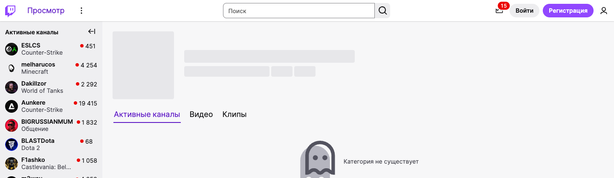

v18 · Как Twitch
Тонкая строка: бренд, «Расписание» цветом, поиск по центру, «Войти» и «Фэнтези». Слева — панель «Идёт сейчас»: игры с главным турниром и числом матчей в эфире.
Образец — шапка Twitch (скрин 15.10)

Наша шапка по этому образцу · десктоп 1440 · кликается: игры, разделы, фэнтези